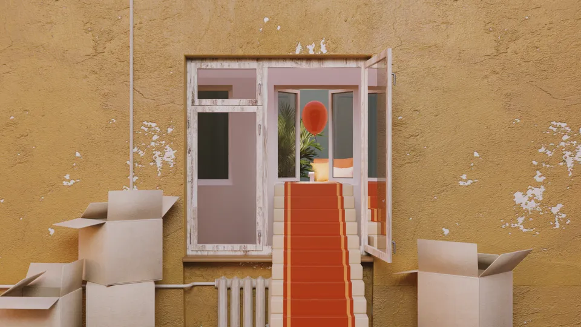
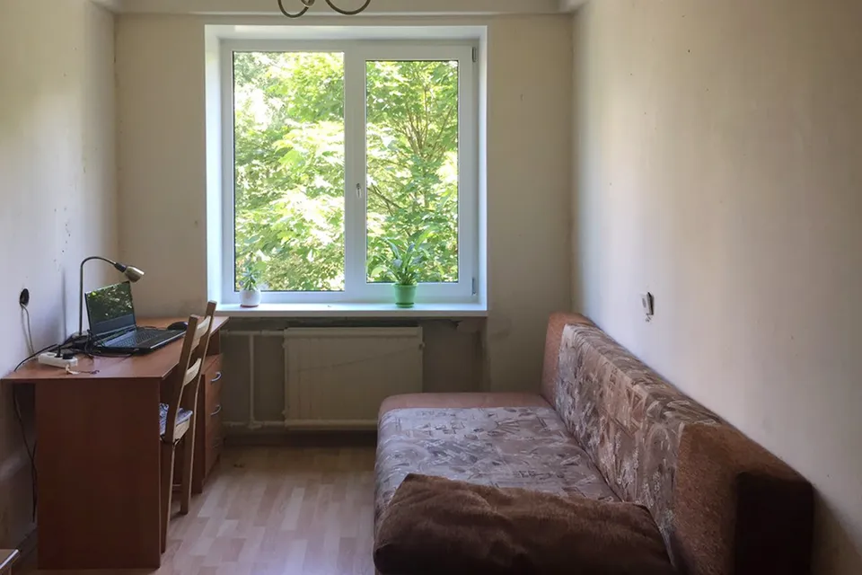
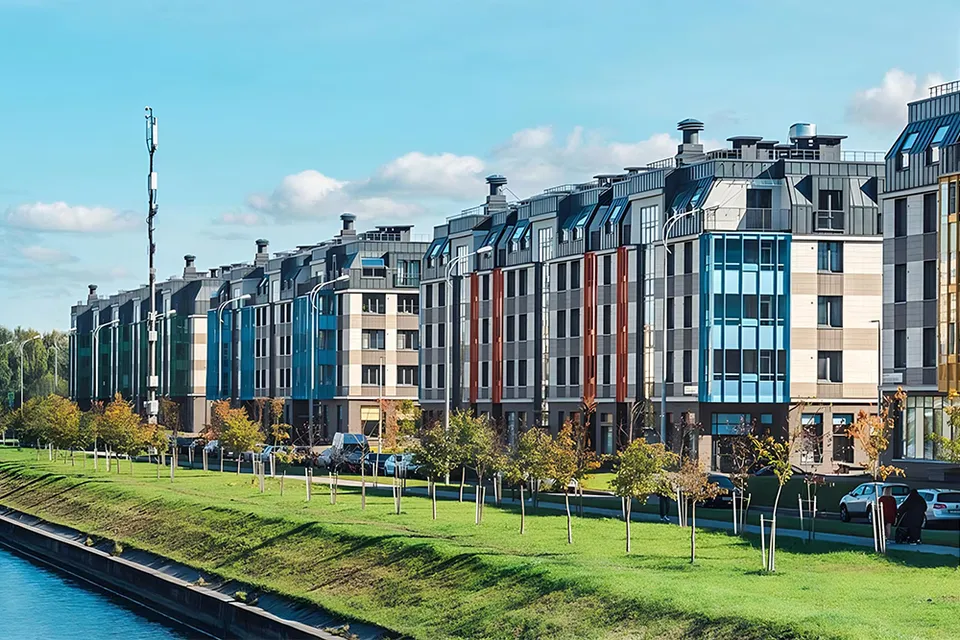

Как я продала неликвидную комнату в хрущевке и купила квартиру в новостройке
Опыт
читательницы

Раньше у меня в собственности была часть комнаты в хрущевке в Санкт-Петербурге.
Вторая ее часть принадлежала моей сестре. Наш дом стоял в очереди на реновацию. Мы давно хотели продать комнату и вложиться в собственное жилье для каждой. Но боялись, что будем вынуждены отклонять предложения выкупа с ипотекой: банки не очень любят одобрять кредит на жилье, которое стоит в очереди на снос.
За несколько лет стоимость нашей комнаты выросла всего на 10%, в то время как квартиры в новостройках за последний год подорожали более чем на 22%. Это стало ситуацией из разряда «либо покупаем что-то сейчас, либо потом ничего» — так сильно дешевели наши деньги в этой комнате. Расскажу, чем в итоге закончилась наша история и успели ли мы купить что-то приличное.
Как я уговорила сестру продать комнату
Комната в двушке в доме под снос досталась нам от родителей, которые купили ее нам напополам с сестрой в 2014 году. Несколько лет после покупки в ней жила я, потом несколько лет перед продажей — с 2018 по 2021 год — она простаивала.
Последние три года я активно следила за рынком недвижимости, поскольку давно мечтала о своей квартире. Но из-за недоверия сестры к моим намерениям никак не могла осуществить задуманную продажу комнаты и покупку своего жилья. Ей казалось, что в мои на тот момент 22 года я не слишком уверенно стою на ногах в финансовом плане, чтобы брать ипотеку. Хотя тогда я уже работала три года и бросать работу не планировала.
Сестра считала, что лучше подождать и накопить сумму побольше. Мы очень долго ругались, в каких-то моментах приходилось даже идти на шантаж. Я показала сестре, как к 2021 году увеличилась стоимость квартир, которые я планировала брать в 2018 году. Продемонстрировала ей, сколько потенциально могу накопить за условные один-два года и как за аналогичный период вырастет стоимость первичного жилья и ставка на ипотеку.
Я предполагала, что низкая ставка — удачное окно возможностей, упустить которое будет стоить нам слишком дорого. Точно не скажу в цифрах и пропорциях, поскольку прошло уже больше года, но оказалось, что продолжать копить при моих скромных доходах — не самая удачная идея. Наконец мне удалось уговорить сестру продать нашу комнату.
Так выглядела наша с сестрой комната в хрущевке, которую мы в итоге продали
Как мы продавали комнату
С поиском покупателя нам повезло: нашу комнату согласился выкупить родственник собственника второй комнаты. Мы продали ее быстро, где-то за один-два месяца.
Сделали это с помощью Сбера, и самым отвратительным и неудобным моментом на сделке оказалось общение с его сотрудниками. Дело в том, что операторы в сделке меняются каждый день, и каждый раз нам приходилось с ними созваниваться и многое объяснять с нуля. Например, что комната находится в долевой собственности, то есть оформлена на двух собственников, и продаются обе доли, что документы-согласия других дольщиков есть и их не надо запрашивать вновь.
Операторы много раз говорили нам какую-то ерунду. Например, один сказал, что нельзя продавать доли в рамках одной ипотеки для покупателя. На следующий день звонил другой, и эта информация устаревала, появлялись другие выдуманные проблемы. В итоге мы ругались с банком чуть ли не каждый день, пока наконец не подготовили стандартный ответ для каждого нового оператора, который озвучивали, отсеивая его дурацкие вопросы.
Еще операторы допускали огромное количество орфографических ошибок, вносили данные о продавцах некорректно, путались в стоимости комнаты и ее собственниках, требовали не относящиеся к сделке документы, которые в итоге не потребовались.
Они постоянно некорректно указывали доли и сумму долей: то сумму всей квартиры назначали в сумме одной доли, то метраж умножали на два, то указывали, что собственник один, то долю 50% делили на две между нами. Это странные ошибки, и мы до сих пор не понимаем, почему операторы их допускали. При покупке первичной недвижимости в новостройке таких неприятностей не было.
Проще всего во всей этой истории оказалось работать с документами. Многие пугали, что это кошмар и страшная мука, но в сущности оказалось, что нужно несколько сканов основных документов, таких как паспорт, СНИЛС и трудовая, справка из жилищного агентства — ее выдают за три минуты и почти без очереди — и нотариальное согласие на продажу, которое готовил собственник другой комнаты.
Остальное сделали нотариус и банк. Нам с сестрой оставалось только все принести и поставить свои подписи. Суммарно это заняло не больше двух часов, активной деятельности из которых было минут 15. Так мы продали комнату за 1,6 млн рублей и поделили вырученную сумму пополам.
Как я выбирала жилой комплекс и квартиру для покупки
Для покупки я рассматривала несколько жилых комплексов в пригородах Санкт-Петербурга, таких как Парнас, Кудрово и Стрельна, потому что у меня был сравнительно небольшой первый взнос и граница, в рамках которой я могу позволить себе отчислять деньги на ипотеку в строящемся доме. В конце концов мне удалось найти хороший вариант — хоть и в удаленном районе, на Парнасе, но по приемлемой цене.
Наконец я выбрала дом: мне понравился проект, который застройщик реализовал в том районе, где я сейчас живу. И меня полностью покорило великолепное сопровождение сделки, сайт с личным кабинетом и форумом жильцов, а также регулярное обновление фотоотчетов со стройки.
У застройщика была замечательная менеджер, которая отвечала мне в любое время суток в мессенджере, была невероятно любезной и помогла быстро забронировать последнюю двухкомнатную квартиру в последней очереди домов по невысокой цене.
Я предполагаю, что если бы не ее оперативная работа, то квартира ушла бы кому-то другому, и уверена, что успешность этой сделки — в большей степени ее заслуга. Вроде бы мы все привыкли, что сервис — закономерная часть любой покупки. Но на самом деле настолько обходительного менеджера стоит еще поискать.
Подобного человеческого отношения ждешь от каждого застройщика. Однако у меня есть совершенно противоположный опыт общения с другими компаниями. Например, один застройщик обещал отправить каталог квартир сразу после моего звонка, но прислал его только через несколько дней. Еще он сказал, что умышленно не выводит на сайт весь список квартир.
Понятно, что мне уже было неинтересно с ним общаться, да и сама политика закрытости продаж мне не понравилась. Не говоря уже о том, что окна квартир в его жилом комплексе выходят на Кольцевую автодорогу, дом сдается на год позже, а цены там выше. Купить на старте продаж по сниженной цене квартиру с окнами во двор было просто невозможно.
Я присматривалась к выбранному мной комплексу где-то с декабря 2020 года, а приобрела квартиру в нем в апреле 2021 года. За время раздумий и сделки по продаже комнаты стоимость искомого жилья увеличилась примерно на 300 000—400 000 Р. Это заставляло меня сильно переживать и поторапливать всех вокруг.
Тормозили все: Сбер, моя сестра с подготовкой документов со своей стороны и наш покупатель, который неохотно и не торопясь прогуливался до банка. Его можно понять: ему спешить было некуда, ведь стоимость комнаты растет не так быстро, как новостройки.
Жилой комплекс, который мне понравился у моего застройщика. Но мне не хватило бы денег на покупку квартиры в нем, да и оставались там уже только большие квартиры. Поэтому я присмотрела другой.
Как я копила на первый взнос
Копить на первый взнос я начала где-то за год до покупки. Просто урезала свои потребности до минимума, отписалась от всех рассылок маркетплейсов, чтобы не искушать себя, удалила все приложения с телефона, начала вести эксель-таблицу, где отрисовала таблицу взносов в копилку, и смотрела, как больше и больше растет мой график. Меня это радовало, казалось, что я учусь экономнее жить с каждой транзакцией в копилку.
Важно еще сказать, что у меня никогда не было кредитов. Я бережно отношусь к своим деньгам и скорее предпочту обойтись без какой-либо вещи, чем взять ее в кредит, даже если весь мир будет убеждать меня в том, что это нерациональное решение.
В связи с этим меня пугали все: друзья, коллеги, родственники. Говорили, что раз у меня нет кредитной истории, то банк точно не одобрит ипотеку. Что он обязательно повысит процент, даст меньше сумму, и вообще ни один солидный банк не захочет работать с человеком без кредитной истории.
Доходило до абсурда: сестра предлагала мне взять в кредит хотя бы электрическую зубную щетку, просто чтобы у меня была кредитная история. Я отказалась. Но, судя по моей процентной ставке, все это оказалось какой-то байкой.
Как проходила сделка
Для покупки квартиры в новостройке мне не потребовался риелтор. Все документы по ипотеке подготовил Сбер, а договор долевого участия — представитель застройщика. Мне оставалось только контролировать содержание документов.
Сделку полностью сопровождал застройщик, мне ничего не пришлось делать самой. Я только первично связалась с ним и прислала документы, а дальше уже все детали работы, весь процесс: подбор и просмотр квартиры, бронирование, подача заявки на ипотеку в банк, сбор документов и шквал моих глупых вопросов — были на менеджере. Я ощущала себя максимально комфортно и не переживала, что что-то может пойти не так. Хотя и такое было возможно: ажиотаж тогда был огромный.